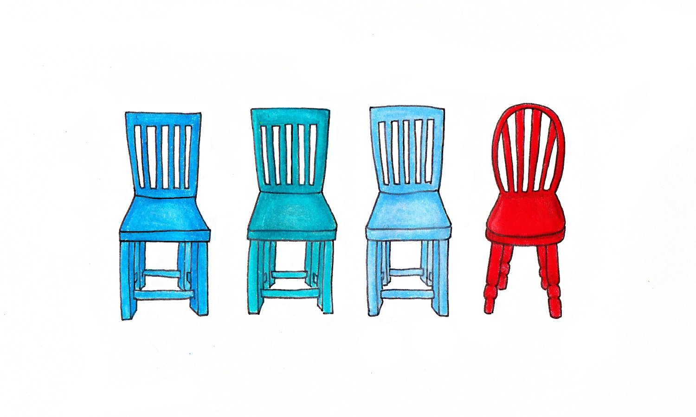

Stereotype Threat
I have felt stereotype threat many times in my life, but I'd like to explore an opportunity where I not only FELT it, but actually fulfilled one stereotype I was in fear of emulating. And I will hide my blushing cheeks behind a computer screen. Luckily, about 10 years later, I do think I've learned and grown just a bit. But this is a good reminder.

When I was in college, I was encouraged by my advisor to take a class exploring the theory and organizing strategies of people of color. I'm really glad he did, because my horizon was broadened immensely by the experience. I was introduced for the first time to Audre Lord's writing, and queer theory more generally. The class opened my eyes to many of the inequalities I hadn't even understood were shaping my reality. It was a class that literally changed my life, encouraging my personal growth and giving me the language to be an engaged member of society.
The class itself was a small workshop. Of 18 students, the only males were myself, a white Jewish man, and a second white Jewish man. As I remember it (and my memory may be faulty here), every other student was a woman of color. The professor was a young woman of color herself.
The class explored race and gender politics in America. And a priority of the class was documenting personal experience, and shifting the default academic voice from the striving to be objective to the embracing personal experience as a resource to weigh on par with text.
So, basically, we read about race, gender, class, and sexuality in America. Then we sat in a circle and talked about how we felt.
I was terrified.
Every single class.
I didn't want to say something insensitive, but inevitably I did. Several times. Once when discussing the Los Angeles I had grown up in, I referenced the prevalence of "illegal aliens" in the city.
The term I had taken for granted is intrinsically a dehumanizing term for people who I then learned should be referred to as undocumented workers. My misuse of language in that instance was an important education. But I didn't want to admit my ignorance every class, and display all the assumptions I had assimilated as a white male.
So I spent a lot of time in class listening and learning, while mostly staying silent.
My super embarrassing mistake of male-entitlement came at the end of a second semester's class with the same teacher. I was so taken with the material and the professor that I signed up for another class that explored memoir.
As my final paper, I submit a memoir about my developing sexuality (I was in the process of discovering that I am bi) and an intimate experience I had with a friend who was experiencing loss. It was a really honest piece, and it was important for me to write it.
The piece was really well received by my professor, and she gave personal feedback. She wrote something along the lines of "your piece gave a great insight into your experience with love and life, and I look forward to learning more".
I, being in a situation where a woman in power was giving me positive feedback on a piece I had written about my sexuality, misinterpreted this as a coded proposition from my professor.
I inquired, via email, if this is what was happening. Of course it wasn't. And I was mortified.
But I think part of my mistaken assumption had to do with entitlement and subtle misogyny. I was studying women's agency, queer theory, and radical organizing. But, when a woman in power gave me positive feedback I immediately assumed there was a sexual undercurrent. All the content I had studied was forgotten- and my reasoning was reduced to "woman praise = sexual attention". Fail.
Ok- nice story. What's the take away, and how does this inform my future choices?
As for reducing stereotype threat that others' may be feeling from me, I can be very specific about welcoming and appreciating contributions each person is making personally. Target what a team member is doing well, and publically appreciate that contribution. Give feedback and criticism in a way that encourages growth rather than shutting it down. "I noticed this in your work, and I think you can improve what you are already doing well be doing x,y, z..."
As for countering my own experience of stereotype threat - this is still a challenge for me. I often have a very active self editor, and double or triple verify that I say what I really want to say. Which at teams can lead to stuttering or slowed speech.